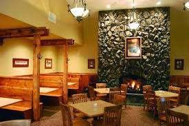
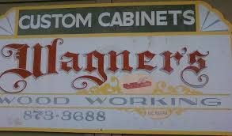
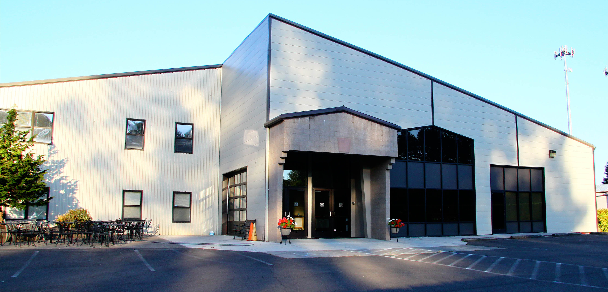

My Story
 Hello reader, my name is Chase! I'm currently going to a coding camp called "Epicodus" while living in Independence Oregon! I figured what better time to do school remotely than now, its never been more convenient safe option. Currently I am working with the programs HTML, CSS, and Bootstrap. Even though I am nervous, I look forward to the opportunities I have at Epicodus to become a modern day coder! Before going to school I worked as a host at a diner, a woodworker at a cabinet shop, and a kids youth leader! I was born in Salem and moved to Silverton from 2nd grade all the way through highschool. I can't wait to see which career path is next for me!
Hello reader, my name is Chase! I'm currently going to a coding camp called "Epicodus" while living in Independence Oregon! I figured what better time to do school remotely than now, its never been more convenient safe option. Currently I am working with the programs HTML, CSS, and Bootstrap. Even though I am nervous, I look forward to the opportunities I have at Epicodus to become a modern day coder! Before going to school I worked as a host at a diner, a woodworker at a cabinet shop, and a kids youth leader! I was born in Salem and moved to Silverton from 2nd grade all the way through highschool. I can't wait to see which career path is next for me!
Previous Employment
- The Home Place Restaurant Time of employment October 2016 - July 2018
- Wagner's Woodworking Time of employment July 2018 - November 2019
- SCF Church/Food Bank Time of emplyoment December 2019 - July 2020
Worked as a host and waiter
Worked as a full service cabinet maker
Worked as a kids church leader and a food bank manager
A list of my Favorite Hobbies
*from favotire to least favorite*
- Playing Music
- Filming Short Films
- Watching Movies
- Camping